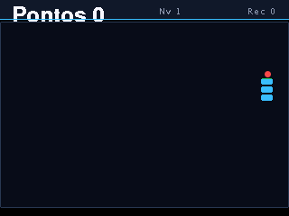
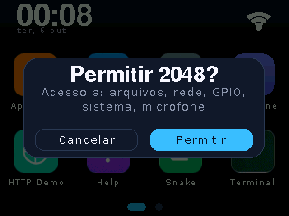
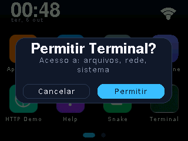

Olá mundo de verdade #
Este é o app inteiro (o celeros.ola da loja, na essência) — tema
do sistema, texto centralizado e um tap para sair da tela "sobre":
var T = System.theme(); // cores do sistema (dark/light da placa)
var W = 240, H = 320; // canvas LOGICO — o firmware escala
System.fillScreen(T.bg);
System.setTextColor(T.text, T.bg);
System.setFont(2); // fonte grande
System.drawString("Ola, CelerOS!", (W - System.textWidth("Ola, CelerOS!", 2)) / 2, 140, 2);
while (true) {
var t = System.getTouch();
if (t.touched && t.y > 250) break; // tap na faixa de baixo: sai
System.delay(20); // cooperation com o sistema
}E o app.json mínimo que acompanha:
{
"name": "Ola",
"packageName": "dev.maikeu.ola",
"version": "1.0.0",
"api": 1,
"author": "Maikeu",
"description": "Diz oi e mostra onde tocar.",
"category": "Demos"
}O runtime #
- Duktape ES5:
var, sem arrow functions, semlet/const, sem template literals. Polyfills existem para o essencial, mas escreva ES5 de verdade. - Loop cooperativo: seu
while (true)precisa chamarSystem.delay(ms)— é o rend para o resto do sistema (UI, rede, watchdog). - Coordenadas lógicas 240×320: identidade da UI em todas as placas;
System.getInfo()entrega o vidro real (screenW,shape,inset) quando o app precisa se adaptar. - Sem acentos na UI do app: a fonte do dispositivo cobre Latin-1, mas
os glifos acentuados não existem em todos os tamanhos — a convenção do
ecossistema é texto sem acento (o
tools/acentuar.pydo firmware devolve acentos em literais quando a fonte cobre).
APIs globais #
O que fica exposto ao JS (resumo — o SDK completo com tipos está em
tools/sdk/celer.js do repo do firmware):
| Namespace | O essencial |
|---|---|
System | fillScreen / fillRect / fillRoundRect / drawRect / drawLine,
drawString / textWidth / setTextColor, getTouch(),
delay(), theme(), getOSVersion() / getAPILevel(),
beep(), led(), rescanApps(),
topbarText(), keypad* (teclado ancorado) |
FS | readTextFile / writeTextFile / appendTextFile,
exists / deleteFile / mkdir / listDir — jail em
/local e /sd |
Net | get(url) / getJSON(url),
download(url, destino [, progresso]) streaming,
isConnected() — HTTPS com o bundle de CAs |
Storage | key/value privado por pacote (API 12+): get/set/clearFor(pkg) |
AI S3 | AI.chat(prompt) — IA on-device (placas com PSRAM) |
Comece pelo SDK emulador. tools/sdk/celer.js roda seu
main.js headless no PC e renderiza PNGs do framebuffer — itere sem placa
e valide o visual antes do apps install.
Limites (o hub valida no publish) #
| Regra | Limite | Erro |
|---|---|---|
main.js (+ módulos .js) | ≤ 48 KB ≤ 128 KB com requires psram | 400 / 413 |
| qualquer .js individual > 30 KB | exige api ≥ 6 (truncamento em fw antigo) | 400 |
icon.png | ≤ 16 KB + magic bytes PNG | 400 / 413 |
| extras (multi-arquivo) | ≤ 16 arquivos, ≤ 128 KB cada, ≤ 256 KB somados | 400 / 413 |
| extensões de extras | .js .png .wav .json .bin | 400 |
| zip inteiro (payload) | ≤ 48 MB comprimido / 64 MB descomprimido | 413 |
version nova | sempre > que a atual do pacote (ou force=1) | 409 |
Testar no aparelho #
# instala a pasta local e ABRE o app (--run encerra o anterior) python3 tools/celerctl.py -p /dev/ttyUSB1 apps install minha-pasta --run # loop de desenvolvimento: watch + reload + logs ao salvar python3 tools/celerctl.py -p /dev/ttyUSB1 dev # logs do app em tempo real python3 tools/celerctl.py -p /dev/ttyUSB1 logcat # debugger Duktape: breakpoints, step, eval no app rodando python3 tools/celerctl.py -p /dev/ttyUSB1 debug "App Store"
O apps install também roda um lint do pacote (mesmo do CI)
— ele recusa campos gerenciados pelo hub e alerta permissions ausente:
erro: app.json:0:0 campo "published_at" e computado pelo hub: nunca setar a mao aviso: app.json:0:0 sem campo permissions: o firmware concede TODAS (fs/net/gpio/system)
É isto rodando #

celerctl swipe

Publicar na loja #
python3 tools/publish_app.py minha-pasta \
--hub https://os.celer.tec.br --token $CELER_HUB_TOKEN
# resposta: {"ok": true, "package": "dev.maikeu.ola", "version": "1.0.0", …}- O token precisa do escopo
apps(ou*) — veja tokens. - Republicar exige versão maior; quem publica primeira vez um
packageNamevira o dono dele — só root força por cima. - Campos
size/md5/published_at/publisher/filessão computados no servidor; o catálogo reflete na hora (gerado na rota).
Equivalentes diretos por HTTP (o que a CLI faz):
curl -H "Authorization: Bearer $CELER_HUB_TOKEN" \
-F "file=@minha-pasta.zip" \
https://os.celer.tec.br/admin/appsQuer ver todos os apps publicados com metadados, MD5 e downloads?
O portal renderiza o catálogo inteiro — ou chamada única a
/store/all.json.